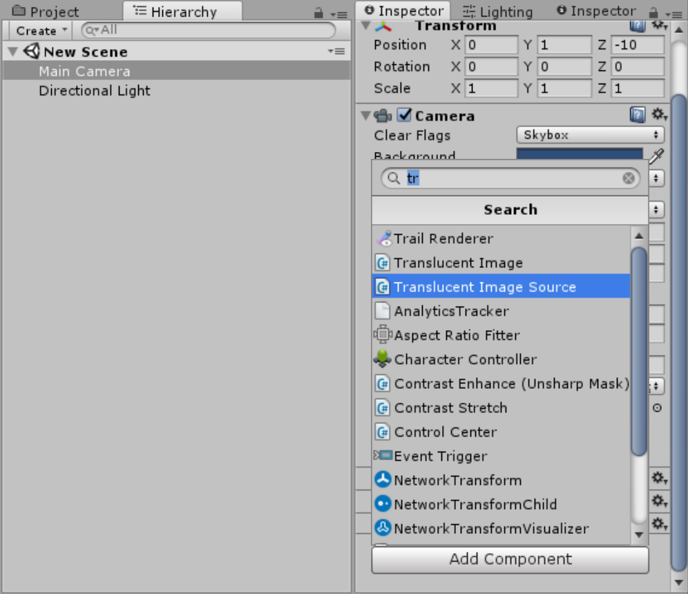
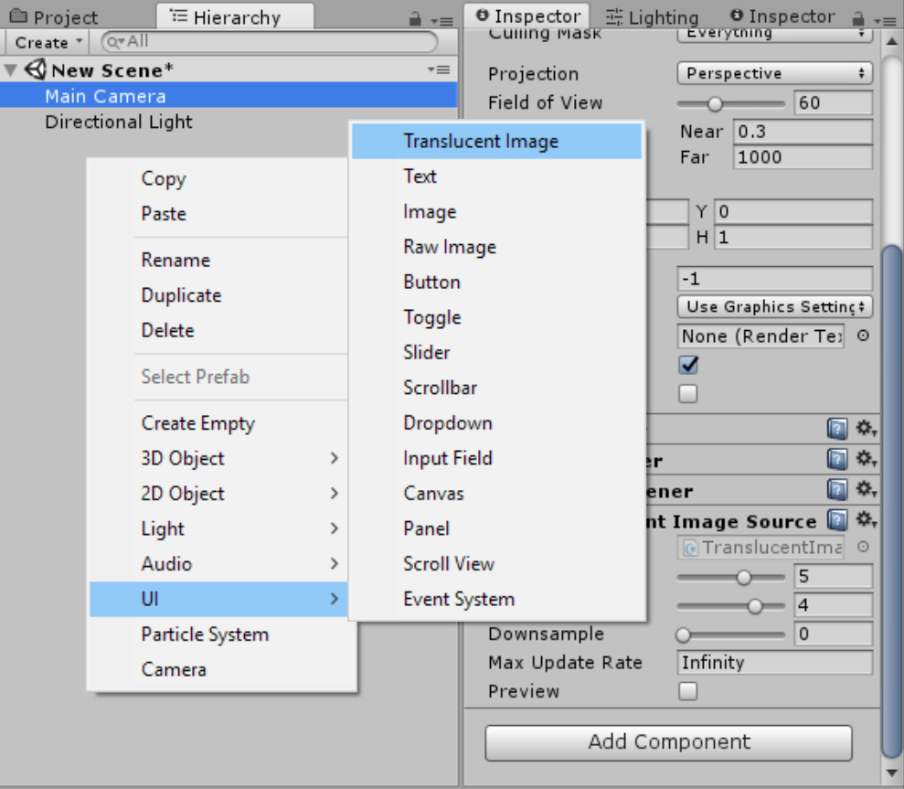
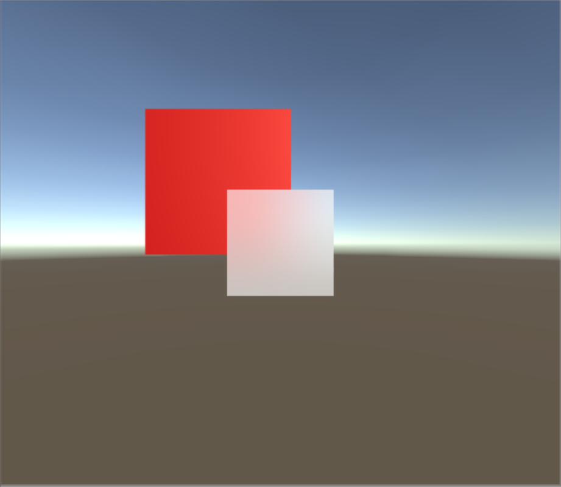

Translucent Image’s Manual¶
Getting Started¶
Add
Translucent Image Sourcecomponent to your main camera.Create
UI -> Translucent Imageas you would with built-in UI.That this!

Customize¶
Tip
This package was designed to be scalable. All properies that was said below to affect performance actually do so very little
There are 2 components that form the effect, both with their own parameter that affect the look of the effect:
Translucent Image Source¶
This component offers two modes: Simple and Advanced:
- Simple mode only has one property:
- Strength. Using this property, you can (kinda) smoothly change the blur amount at runtime.
Advanced mode has 3 properties:
- Size: How much blurriness you want. Doesn’t affect performance, but will look bad if the number too big. Also reduce flickering.
- Iteration: Increase blur quality and blurriness when it is increased. The bigger it is the less performance loss when increasing further.
- Downsample: Decrease the resolution before processing to increase performance. Side effect include increase blurriness and flickering.
There are also 3 other properties that are independant of mode:
- Max Depth: Increase this property will:
- Increase flickering when background moving
- Increase blur level
- Improve performance
- Max Update Rate: How many time the effect update itself per second. Use this property to increase performance and decrease power usage. Set to 0 to pause, this can reduce power usage/ prevent overheat when you don’t need dynamically updating background - like in a pause menu for example.
- Preview: preview the effect in full-screen without creating a Translucent Image
Translucent Image¶
Source: Translucent Image Source component. This is where the image gets the blurred screen. It will automatically being set to the first one found, so you should make sure there on in your screen before creating any Translucent Image. You can always override this to change which camera will be blurred
Color: Color
Vibrancy: How colorful you want the background to be, 0 mean black and white, negative value will invert the color. This is great for enhancing the detail behind the image, or making death screen.
- Material: Multiple Translucent Image using the same material can only have different color, but they will also batch and only take one draw call.
Attention
Material used here must use the shader UI/TranslucentImage
Raycast Target: same as other UI element, whether it receive pointer event or not. (Translation: clickable. And some minor other thing)